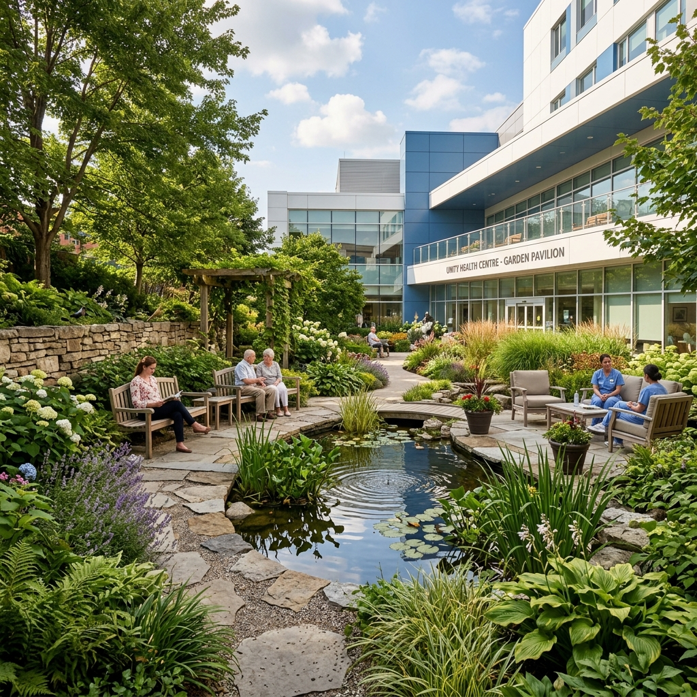

Fasilitas kesehatan terlengkap dan termodern di Yogyakarta.
Pelayanan konsultasi rawat jalan yang didukung oleh jajaran dokter spesialis berpengalaman di bidangnya.
Pelayanan kesehatan primer, skrining kesehatan menyeluruh, dan konsultasi keluhan umum pasien.
Diagnosis dan penanganan medis penyakit dalam non-bedah untuk orang dewasa dan lansia.
Konsultasi pre-operasi dan pasca-operasi serta tindakan bedah minor hingga mayor terencana.
Pelayanan kehamilan terpadu (USG 4D), persalinan aman, keluarga berencana, dan kesehatan reproduksi wanita.
Pemantauan tumbuh kembang, imunisasi wajib & tambahan, serta pengobatan penyakit anak.
Diagnosis dan pengobatan gangguan telinga, hidung, tenggorokan, kepala, serta leher.
Penanganan penyakit sistem saraf termasuk stroke, epilepsi, nyeri kronis, dan sakit kepala.
Perawatan konservasi gigi, bedah mulut, perataan gigi (ortodonti), dan estetik mulut.
Pemeriksaan visus, penanganan katarak, glaukoma, serta kelainan refraksi mata anak dan dewasa.
Peralatan medis canggih bersertifikat internasional dan layanan klinis darurat terpadu.
Instalasi Gawat Darurat yang bersiap penuh 24 jam dengan tim dokter kegawatdaruratan dan ambulans respon cepat.
Laboratorium patologi klinik dan farmasi obat rawat jalan/rawat inap yang melayani pasien non-stop.
Dilengkapi dengan 5 ruang operasi mayor standar internasional dengan sterilisasi hepa-filter tekanan tinggi.
Fasilitas CT Scan 64 Slice, Magnetic Resonance Imaging (MRI), X-Ray C-Arm Mobile, dan Ultrasonografi (USG) 3D/4D.
Perawatan intensif bagi orang dewasa maupun bayi baru lahir dengan pengawasan monitor jantung 24 jam.
Fasilitas cuci darah aman menggunakan mesin modern dengan penanganan terpadu tim ginjal-hipertensi.

Kami percaya bahwa pemulihan tidak hanya melibatkan fisik, tetapi juga pikiran dan jiwa. Healing Garden kami menyediakan ruang terbuka hijau yang menenangkan bagi pasien dan keluarga.
Kapasitas total 150 tempat tidur yang dibagi berdasarkan kelas kenyamanan dan kebutuhan medis pasien.
| Kelas Kamar | Jumlah Tempat Tidur | Fasilitas Utama |
|---|---|---|
| VIP Room | 24 Bed | 1 Bed per kamar (VIP Luas 3.45m x 5.5m), Sofa bed pendamping, TV, Kulkas, AC, Kamar Mandi Dalam. |
| Kelas 1 | 36 Bed | 2 Bed per kamar, Pembatas gorden, TV, AC, Lemari pribadi, Kamar Mandi Dalam. |
| Kelas 2 | 40 Bed | 4 Bed per kamar, AC, Kursi penunggu, Kamar Mandi Dalam. |
| Kelas 3 | 40 Bed | 6 Bed per kamar (Memenuhi regulasi KRIS BPJS), AC, Kamar Mandi Dalam. |
| ICU / Intensive Care | 10 Bed | Sistem ventilasi hepa-filter terpusat, Monitoring vital sign 24 Jam, Tabung oksigen sentral. |
| Total Kapasitas Bed | 150 Bed | Termasuk ruang isolasi khusus. |